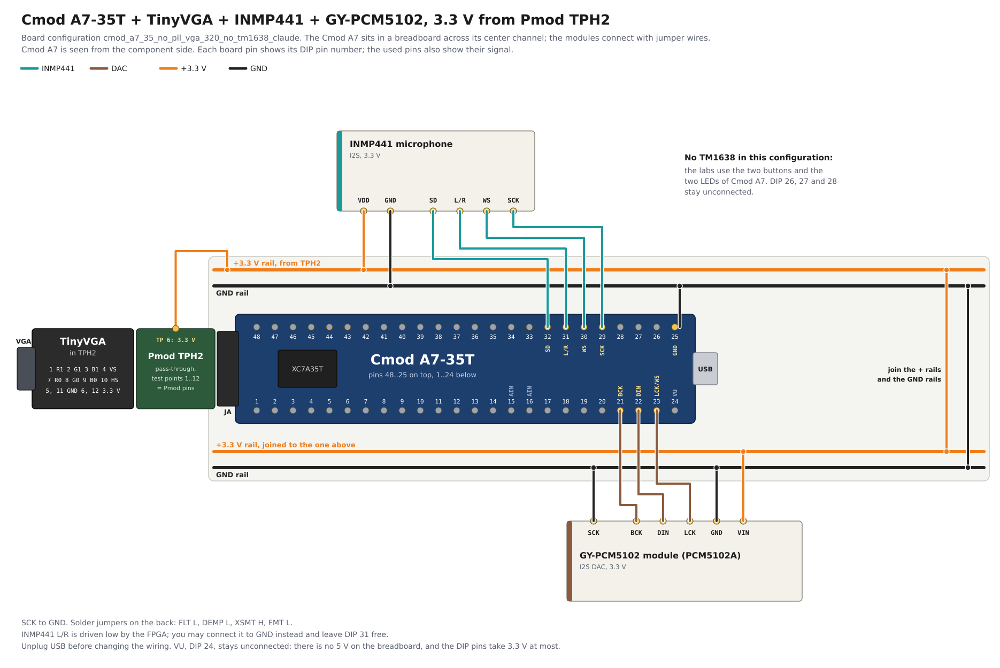
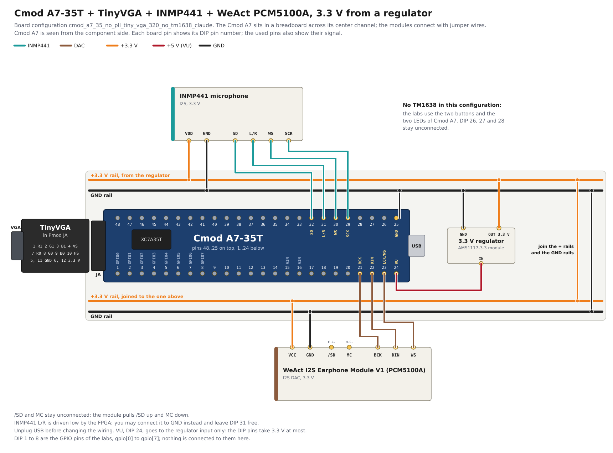
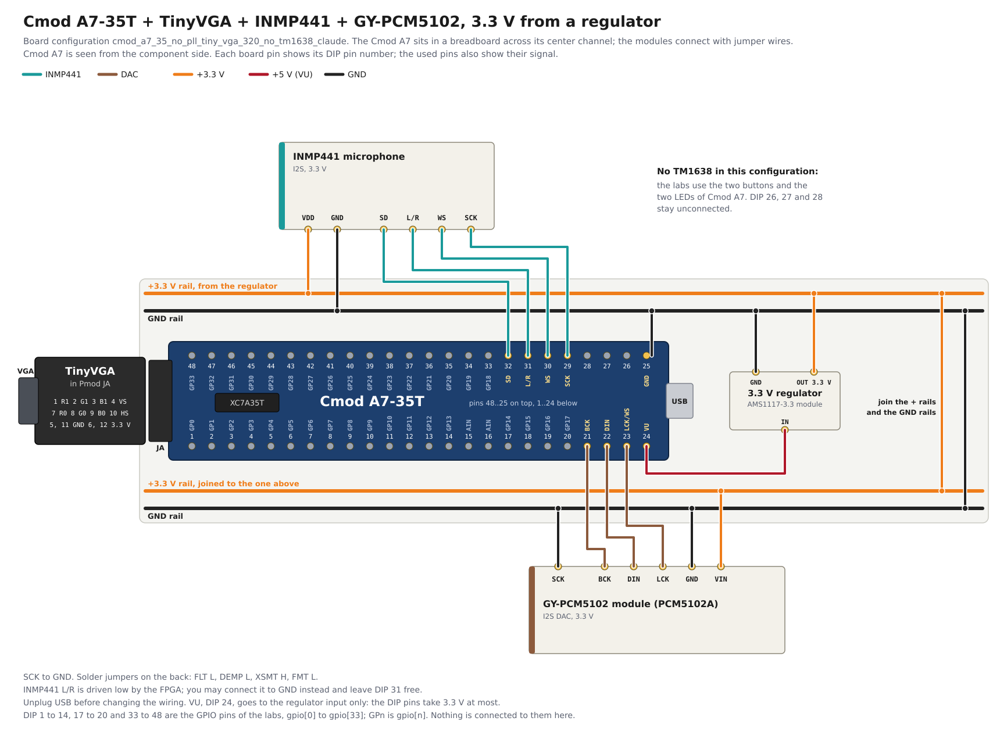

Создано Claude Opus 5.5 (claude-opus-5-5) в Claude Code 2.1.325, уровень усилий xhigh, по промпту Юрия Панчула. Дословный промпт — в приложении.
Cmod A7-35T без TM1638 и без MMCM: TinyVGA 320x480
Конфигурация платы cmod_a7_35_no_pll_tiny_vga_320_no_tm1638_claude. English version: README.md.
Это cmod_a7_35_no_pll_tiny_vga_320_claude без модуля TM1638. Упражнения получают две кнопки Cmod A7 в качестве своих кнопок и два её светодиода в качестве своих светодиодов, а семисегментного индикатора нет. Всё остальное — как у cmod_a7_35_no_pll_tiny_vga_320_claude: тактовая частота 12 МГц без MMCM, VGA 320x480 с пикселями ровно в два при частоте строк 30 кГц, которую некоторые мониторы не принимают, микрофон, ЦАП, выводы и соединения. Другие конфигурации без TM1638 — cmod_a7_35_tiny_vga_640_no_tm1638_claude, cmod_a7_35_no_pll_tiny_vga_304_no_tm1638_claude.
Содержание
- Чем отличается
- Как это сделано
- Оборудование и соединения
- Сборка и запуск упражнений
- Состояние
- Файлы
- Приложение: промпты
Чем отличается
| cmod_a7_35_no_pll_tiny_vga_320_claude | cmod_a7_35_no_pll_tiny_vga_320_no_tm1638_claude, эта | |
|---|---|---|
| Кнопки упражнений | 8 кнопок TM1638 | BTN0 и BTN1 на Cmod A7: key[0] и key[1], они же sw[0] и sw[1] |
| Светодиоды упражнений | 8 светодиодов TM1638, первые два также на LED1 и LED2 Cmod A7 | LED1 и LED2 на Cmod A7: led[0] и led[1] |
| Семисегментный индикатор | 8 разрядов TM1638 | Нет |
| Кнопка сброса | Любая кнопка Cmod | Нет: обе кнопки — это кнопки упражнений |
| DIP 26, 27, 28 | TM1638 STB, CLK, DIO | Не подключены |
Нажатая кнопка даёт 1; светодиод горит при 1. Упражнения получают один разряд семисегментного индикатора, который никуда не идёт, поэтому упражнение, управляющее индикатором, собирается и работает, а вывод на индикатор теряется. Так же теряется всё, что упражнение показывает на светодиодах после первых двух.
После загрузки проект находится в сбросе первые три такта. Ни одна кнопка его не сбрасывает: чтобы начать упражнение заново, загрузите ПЛИС ещё раз командой ./04_configure_fpga.bash.
Проект держит выводы DIP 26 и 27, STB и CLK модуля TM1638 в cmod_a7_35_no_pll_tiny_vga_320_claude, в высоком уровне и не управляет выводом DIP 28. Оставьте эти три вывода неподключёнными.
Как это сделано
В board_specific_top.sv две строки кода. Он определяет FORCE_NO_INSTANTIATE_TM1638_BOARD_CONTROLLER_MODULE и включает board_specific_top.sv из cmod_a7_35_no_pll_tiny_vga_320_claude, который тогда не создаёт TM1638, хотя peripherals/lab_specific_board_config.svh его включает. Другие платы репозитория без TM1638, например tang_nano_9k_hdmi_no_tm1638, сделаны так же, но некоторые из них рисуют виртуальный TM1638 на экране; эта не рисует.
board_specific.xdc — тот же, что у cmod_a7_35_no_pll_tiny_vga_320_claude. Строки выводов DIP 26, 27 и 28 в нём остаются раскомментированными, потому что у включённого модуля верхнего уровня эти порты есть.
Оборудование и соединения
Детали, источник 3,3 В, сборка и таблицы соединений — как у cmod_a7_35_no_pll_tiny_vga_320_claude, но без TM1638: не ставьте модуль и его пять проводов. Вывод DIP 25 по-прежнему идёт на шину GND. Выводы коротко:
| Cmod A7 | Подключить к |
|---|---|
| Pmod JA | TinyVGA |
| DIP 21, 22, 23 | ЦАП BCK, DIN и LCK у GY-PCM5102 или WS у WeAct |
| DIP 24, VU | Вариант A: ничего. Вариант B: только вход стабилизатора |
| DIP 25 | Шина GND |
| DIP 26, 27, 28 | Ничего |
| DIP 29, 30, 31, 32 | INMP441 SCK, WS, L/R, SD |
TinyVGA. Выход VGA — это TinyVGA, плата Pmod, которую сделал Leo Moser, в разъёме Pmod JA; её проект лежит в github.com/mole99/tiny-vga. Магазин Tiny Tapeout продаёт её собранной под названием Tiny VGA Pmod, за 15,00 € в ноябре 2026 года. Её можно и заказать собранной на JLCPCB по файлам GERBER-tiny-vga.zip, BOM-tiny-vga.csv и CPL-tiny-vga.csv из каталога pcb/jlcpcb/production_files/ репозитория; шаги описаны в разделе Где взять TinyVGA инструкции cmod_a7_35_claude_tiny_vga_640.
На рисунках этого каталога нет TM1638; они есть для обоих модулей ЦАП: WeAct I2S Earphone Module (PCM5100A) и GY-PCM5102 (PCM5102A). Надписи на рисунках — на английском.
Вариант A: 3,3 В от Pmod TPH2


Вариант B: 3,3 В от стабилизатора


Микрофон, ЦАП и стабилизатор, вставленные в макетную плату
breadboard_weact.png с модулем WeAct и breadboard_gy_pcm5102.png с GY-PCM5102 показывают микрофон, ЦАП и стабилизатор варианта B, вставленные прямо в макетную плату. Векторные версии всех рисунков — файлы .svg с теми же именами.


Сборка и запуск упражнений
В каталоге упражнения один раз выберите плату командой ./06_choose_another_fpga_board.bash и укажите cmod_a7_35_no_pll_tiny_vga_320_no_tm1638_claude. Затем собирайте и загружайте, как для cmod_a7_35_no_pll_tiny_vga_320_claude:
./03_synthesize_for_fpga.bash
./04_configure_fpga.bashСкрипты используют Vivado для всех плат, имя которых начинается с cmod_a7, поэтому для этой конфигурации скрипты менять не нужно.
Состояние
Собрано в Vivado 2026.1 с файлом конфигурации скриптов, peripherals/lab_specific_board_config.svh, который включает TM1638: сборки показывают, что эта конфигурация всё равно его не создаёт.
| Упражнение | LUT | Регистры | Худший запас по setup |
|---|---|---|---|
labs/1_basics/1_05_7seven_segment_letter | 41 | 44 | 79,3 нс |
labs/2_graphics/2_3_color_stripes | 54 | 45 | 79,2 нс |
labs/3_music/3_10_spectrum_analyzer | 2340 | 1471 | 68,1 нс |
Во всех сборках нет ошибок и критических предупреждений, и все временные ограничения выполнены на 12 МГц, при периоде такта 83,3 нс, без MMCM и PLL. Ни в одном нетлисте нет модуля TM1638. Vivado выдаёт предупреждение правил проектирования CFGBVS-1, как и для cmod_a7_35_claude_tiny_vga_640; оно не мешает созданию битового потока.
На реальной плате ещё не проверено.
Файлы
| Файл | Что это |
|---|---|
| board_specific_top.sv | Определяет FORCE_NO_INSTANTIATE_TM1638_BOARD_CONTROLLER_MODULE и включает модуль верхнего уровня из cmod_a7_35_no_pll_tiny_vga_320_claude |
| board_specific.xdc | Тот же, что в cmod_a7_35_no_pll_tiny_vga_320_claude |
| board_specific.tcl | Микросхема ПЛИС для Vivado |
wiring_*.svg, wiring_*.png | Схемы соединений без TM1638 для обоих модулей ЦАП и обоих источников 3,3 В |
breadboard_*.svg, breadboard_*.png | Раскладки на макетной плате без TM1638 для обоих модулей ЦАП |
| README.md, README.html | Эта инструкция на английском |
| README_ru.md, README_ru.html | Она же на русском |
Рисунки делают генераторы cmod_a7_35_claude_tiny_vga_640, запущенные с именем этой конфигурации; для каждого имени, в котором есть _no_tm1638, они не рисуют TM1638:
cd ../cmod_a7_35_claude_tiny_vga_640
python3 generate_wiring_diagram.py cmod_a7_35_no_pll_tiny_vga_320_no_tm1638_claude
python3 generate_breadboard_diagram.py cmod_a7_35_no_pll_tiny_vga_320_no_tm1638_claude
cd ../cmod_a7_35_no_pll_tiny_vga_320_no_tm1638_claude
for f in wiring_*.svg breadboard_*.svg
do
# ${f%.svg} is the file name without the .svg suffix
inkscape "$f" --export-type=png --export-dpi=96 \
--export-background=white --export-filename="${f%.svg}.png"
doneПриложение: промпты
Остальной проект появился из промптов в приложении к cmod_a7_35_no_pll_tiny_vga_320_claude. Эта конфигурация появилась из следующих промптов, которые Юрий Панчул отправил в том же сеансе Claude Code 16 и 17 ноября 2026 года, дословно, с переводом на русский. Здесь все промпты сеанса, начиная с первого об этой конфигурации, включая просьбы сделать коммит и push; последующие промпты, которые касаются этой конфигурации, тоже добавляются сюда. Промпты называют конфигурации так, как они назывались в то время: суффикс _claude появился в 00:43, tiny_ — в 09:47, а tiny_vga_640 — в 10:20 17 ноября. Время — тихоокеанское (UTC−8).
23:17:
keep README.csv with CR-LF for now; I will fix it later; first commint and push, then create 3 new configurations that do not use tm1638, just have 2 buttons, 2 leds and no 7-segement display: cmod_a7_35_no_tm1638
cmod_a7_35_no_pll_vga_304_no_tm1638
cmod_a7_35_no_pll_vga_320_no_tm1638пока оставь README.csv с CR-LF, я исправлю это позже; сначала сделай коммит и push, затем создай 3 новые конфигурации, которые не используют TM1638, а имеют только 2 кнопки, 2 светодиода и никакого семисегментного индикатора: cmod_a7_35_no_tm1638
cmod_a7_35_no_pll_vga_304_no_tm1638
cmod_a7_35_no_pll_vga_320_no_tm163823:53:
commit and pushсделай коммит и push00:29, 17 ноября, о суффиксах _vga_320, _vga_304 и _no_pll, которые Юрий Панчул добавил в меню плат в scripts/steps/00_setup.source_bash, чтобы меню показывало конфигурации без MMCM под cmod_a7_35:
check the changes I did manually. Tell why they are neededпроверь изменения, которые я сделал вручную. Объясни, зачем они нужны00:37, 17 ноября; в каталоге boards/README.csv снова осталась одна строка для физической платы, cmod_a7_35:
yes, fix the catalog, then commit and pushда, исправь каталог, затем сделай коммит и push00:43, 17 ноября:
Add to all your cmod_a7 configurations suffix _claude. Update all the relevant files.Добавь ко всем своим конфигурациям cmod_a7 суффикс _claude. Обнови все связанные файлы.00:56, 17 ноября:
commit and pushсделай коммит и push09:47, 17 ноября; он добавил tiny_ перед vga в имена конфигураций без MMCM и абзац о TinyVGA в раздел Оборудование и соединения:
convert all mentions to vga in configuration names and the related texts to tiny_vga. Specifically mention TinyVGA in documentation, repository https://github.com/mole99/tiny-vga and where to buy it retail or order from JLCPCB. Make sure to add this and other previous and follow-up related prompt as appendices to the instructions you generate.замени все упоминания vga в именах конфигураций и в связанных с ними текстах на tiny_vga. Отдельно упомяни в документации TinyVGA, репозиторий https://github.com/mole99/tiny-vga и где купить его в розницу или заказать на JLCPCB. Обязательно добавь этот и другие предыдущие и последующие связанные промпты в приложения к инструкциям, которые ты создаёшь.10:20, 17 ноября:
commit and push; then rename cmod_a7_35_claude to cmod_a7_35_claude_tiny_vga_640 and cmod_a7_35_no_tm1638_claude into cmod_a7_35_tiny_vga_640_no_tm1638_claudeсделай коммит и push; затем переименуй cmod_a7_35_claude в cmod_a7_35_claude_tiny_vga_640, а cmod_a7_35_no_tm1638_claude — в cmod_a7_35_tiny_vga_640_no_tm1638_claude19:00, 17 ноября:
commit and pushсделай коммит и push19:47, 17 ноября:
commit and pushсделай коммит и push